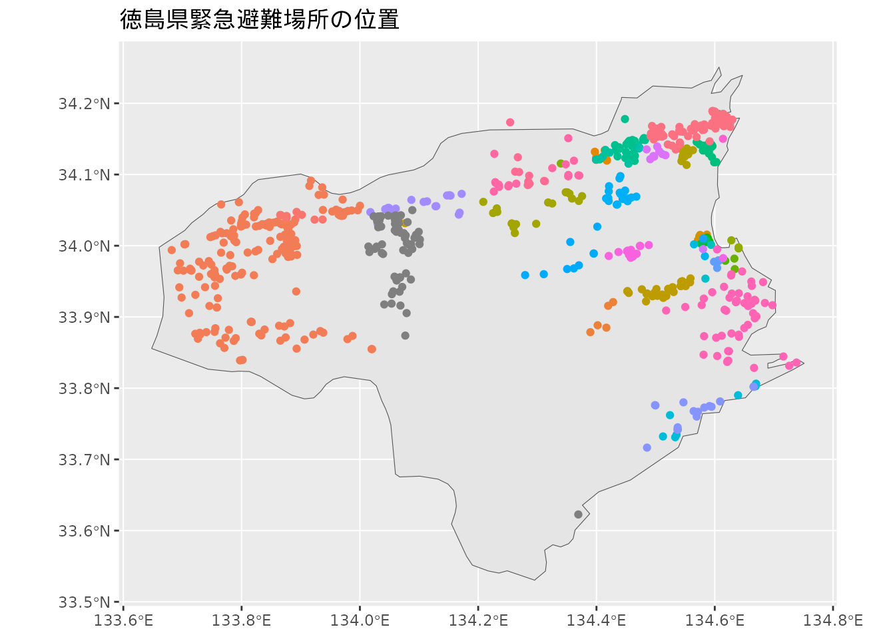

library(sf) # 地理空間データの操作
library(mapview) # 地図のインタラクティブな操作
library(ggplot2) # データ可視化
library(rnaturalearth)
library(rnaturalearthhires)地図へのマッピング
地図データの操作
インタラクティブな地図の操作
オープンデータの活用の中で取り上げた「緊急避難場所 (徳島県)」を再び利用します。 このデータは県内の市町村が指定する洪水災害発生時に利用可能な施設に関しての位置情報を記録したものでした。 このデータに含まれる位置情報（緯度、経度）をもとに、Rで地図を作成してみます。
st_as_sf()関数を使って、データフレーム中の緯度 latitudeと経度 longitudeの列の値をもとに地理空間情報データ（ポイント）に変換します。
# 緯度経度の座標からポイントデータを生成
sf_hinanjyo <-
st_as_sf(df_hinanjyo,
coords = c("longitude", "latitude"),
crs = 4326)避難場所の位置を地図上で確認します。
mapviewパッケージはインタラクティブに操作できる地図機能を提供します。 以下に出力される地図を操作（移動、拡大・縮小、レイヤの変更、アイコンのクリック）をしてみましょう。
mapview(sf_hinanjyo)# 市町村別の塗り分け
# mapview(sf_hinanjyo, zcol = "city")静的な地図の描画とレイヤの重ね合わせ
静的な地図はggplot2パッケージのgeom_sf()関数により生成可能です。
ggplot() +
geom_sf(data = sf_hinanjyo,
aes(color = city),
show.legend = FALSE)+
coord_sf() +
labs(title = "徳島県緊急避難場所の位置")
この図に徳島県の行政区域を重ね合わせ、緊急避難場所の位置をわかりやすく示してみます。 rnaturalearthパッケージはパブリックドメインで使用できるポリゴンデータを提供します。 次のコマンドで四国４県のポリゴンデータを用意します。
# rnaturalearthから四国のポリゴンを準備する
ne_jpn_shikoku <-
rnaturalearth::ne_states(country = "Japan", returnclass = "sf") |>
filter(region == "Shikoku") |>
select(iso_3166_2, name)
ne_jpn_shikoku# A tibble: 4 × 3
iso_3166_2 name geometry
<chr> <chr> <MULTIPOLYGON [°]>
1 JP-36 Tokushima (((134.4424 34.20827, 134.4686 34.20746, 134.4952 34.224…
2 JP-37 Kagawa (((133.5919 34.02381, 133.6209 34.04556, 133.634 34.0607…
3 JP-38 Ehime (((132.6399 32.90892, 132.6272 32.90632, 132.6184 32.906…
4 JP-39 Kochi (((134.2957 33.53032, 134.2732 33.508, 134.2446 33.46075…ggplot() +
geom_sf(data = filter(ne_jpn_shikoku, name == "Tokushima")) +
geom_sf(data = sf_hinanjyo,
aes(color = city),
show.legend = FALSE)+
coord_sf()このほか、行政区域のデータには国土数値情報ダウンロードサービスの行政区域データなどが利用できます。